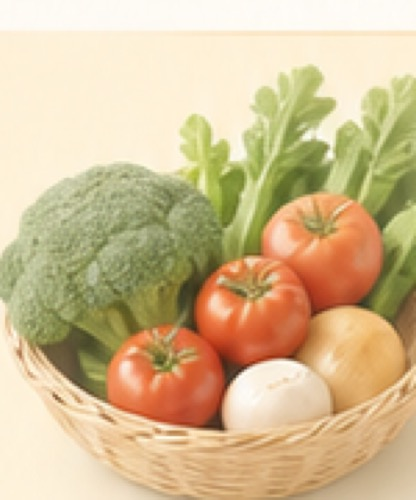

买菜
少跑一趟，少漏一样
今天要买什么？
从已安排的饭自动生成，买完就勾掉。临时想起的也能随手加。
午餐清单
番茄牛腩 + 西兰花 + 米饭。还有 6 项待买，蔬菜和肉类已分好。
待买 6
已买 2
来自午餐

待买清单
按买菜动线整理
少跑一趟，少漏一样
从已安排的饭自动生成，买完就勾掉。临时想起的也能随手加。
番茄牛腩 + 西兰花 + 米饭。还有 6 项待买，蔬菜和肉类已分好。

按买菜动线整理